Unified Clinician Experience
Enhancements to help clinicians work more efficiently
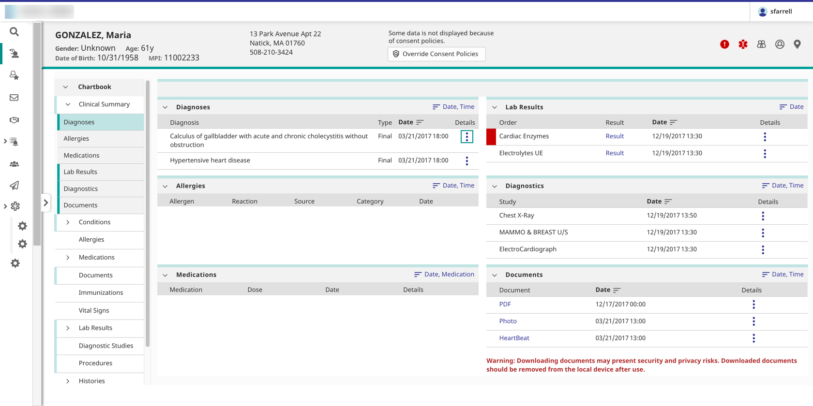
The project
Helping clinical professionals work faster and leverage prior knowledge by providing enhanced patient search screens, a patient banner, a navigation system, and a login system to be used across the product suite.
The problem
- Our products did not feel like part of a unified suite to users, who needed to interact with multiple products to complete their tasks.
- Different products had their own versions of the patient search screens and patient banner, so users had to learn each product separately.
- Users could not move between products quickly; they had to navigate through a highly technical administrative portal.
- Because of differing organizational and governmental requirements at customer sites, our out-of-the-box patient search screens and patient banners did not meet all customers’ needs. However, these features were difficult to customize, and some customers spent significant development resources building versions that met their requirements.
- The existing login system looked outdated, was not customizable or responsive, did not take advantage of modern security features such as two-factor authentication and automatic password expiration, and did not allow users to automatically request their username or a password reset, so users had to go through their service desk to perform these tasks.
Constraints
- Designs had to preserve all existing functionality.
- The patient search screens had to account for various restrictions on showing data to clinicians, such as patient consent, and the ability to override these restrictions.
- The patient banner had to meet the UK’s National Health Service (NHS) requirements for patient banners.
- The navigation system had to scale to include not just our product suite, but third-party applications that users might need to access as part of their workflow.
- All screens had to be responsive.
- All screens had to meet WCAG 2.1 AA guidelines.
- Customers needed to be able to change the look of the new features to match their own branding.
My role
As lead UX designer, I worked with the product manager, front- and back-end developers, QA engineers, technical writer, visual designer, and stakeholders from other product teams.
The solution
I designed a patient search system, a patient banner, cross-product navigation, and a login system to help unify the product suite.
- I leveraged the fledgling design system to ensure a unified look and feel across all new features out of the box.
- We provided an API to allow customers to add their own branding and ensure changes to the look and feel propagated across all new features.
- The patient search screens and the patient banner included a comprehensive set of fields and display options.
- I designed a customizable, scalable navigation system that is accessible from the user's current screen.
- I designed basic and advanced versions of customizable login screens that provide modern security features and allow users to handle their own username and password issues.
Outcome
When I left the project:
- The navigation system was complete and had been adopted by several products in the suite. Users can now move between these products easily, without being forced to return to the administrative portal each time they need to switch applications.
- The login screens had been developed, but had not yet been released. We anticipated that service desks would see a decline in user requests for help with forgotten usernames, password resets, and expired passwords.
- The patient search and patient banner designs were still under development.
- Much of this work was done as the UX team was building a design system, and many of the patterns I developed became part of the design system.
Process
Overall process
The systems were designed separately, but the design process for each system included most of the following steps. For details on the process for each system, see below.
- Research and requirements gathering
- Competitive analysis
- User research
- Stakeholder research
- Workflow analysis
- Design workshop
- Initial mockups for desktop, tablet, and phone
- Clinical and hallway reviews
- Second round of mockups, including visual design
- Clinical, hallway, and patient safety reviews
- Iteration and reviews
- Final prototype
- Design specification
- UX and accessibility reviews of implementation
Process notes: Cross-product navigation
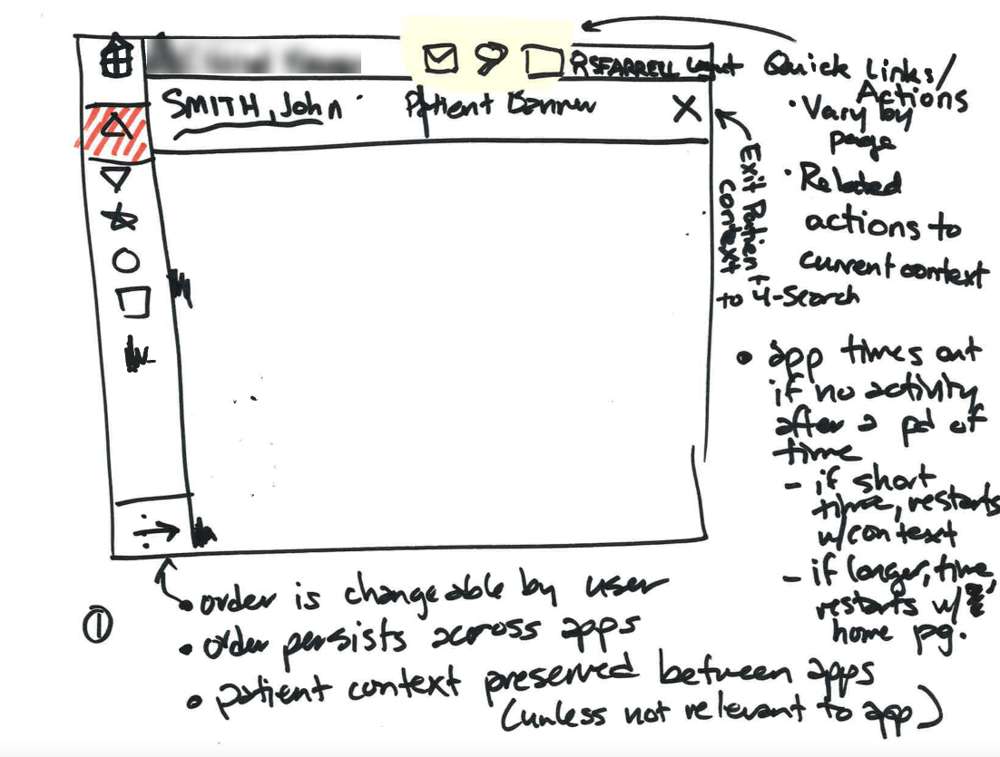
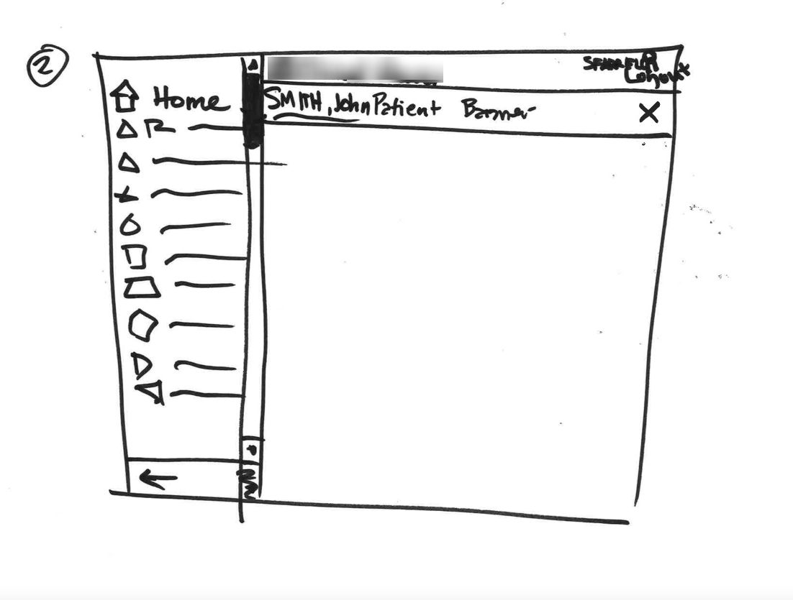
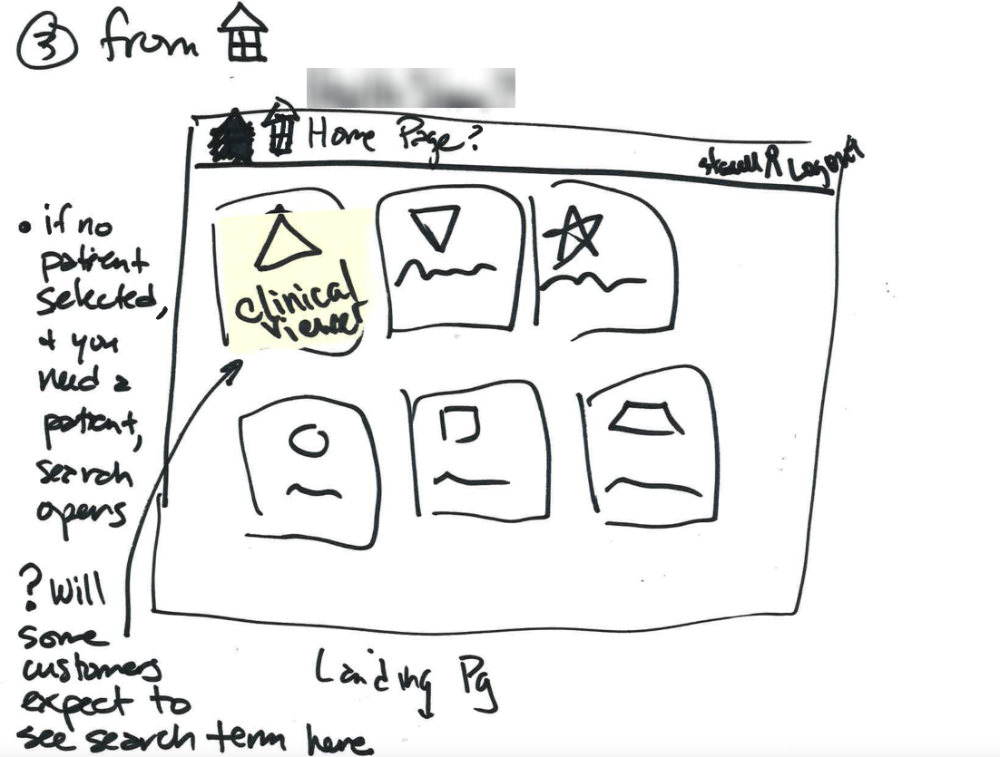
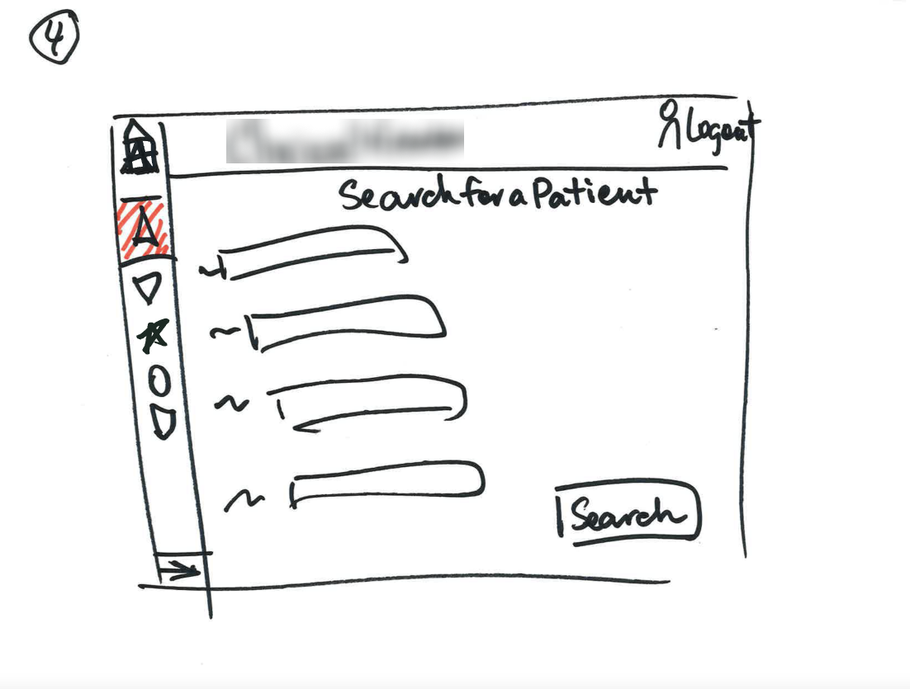
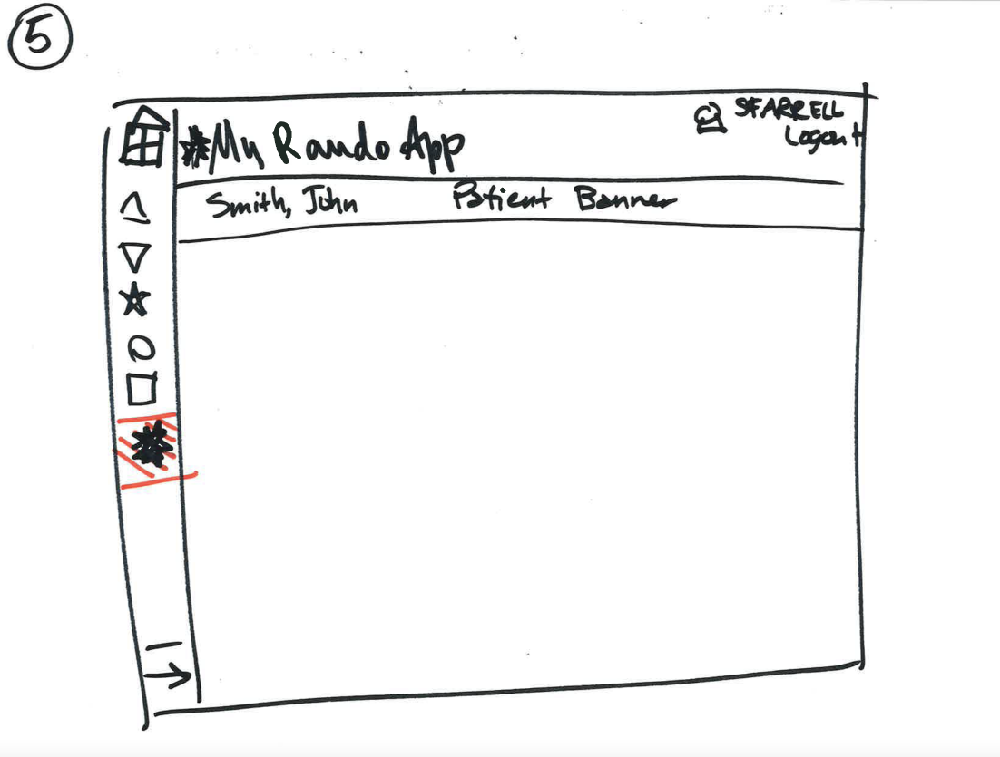
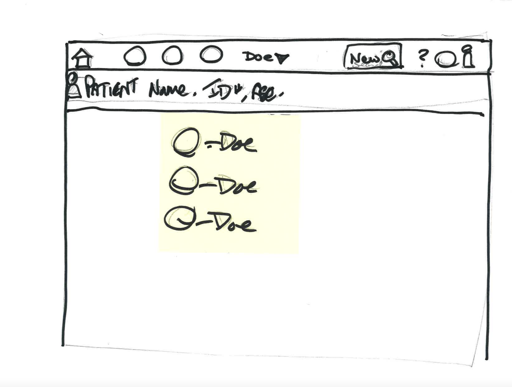
- I started by leading a group design workshop with the development and UX teams to socialize the project, generate ideas, and build consensus around a direction. We agreed that a top header, utility menu, and left navigation bar would be most appropriate given space issues.
- I worked with our visual designer to prototype the header and left navigation bar, including a feature to allow users to select their default application and an option for customers to include second-level items in the left menu.
- After the design went through several rounds of hallway and clinical reviews, I created a design specification for the developers.
- I also performed accessibility testing on the implementation and supported the developers as they remediated accessibility issues.
Process notes: Patient search
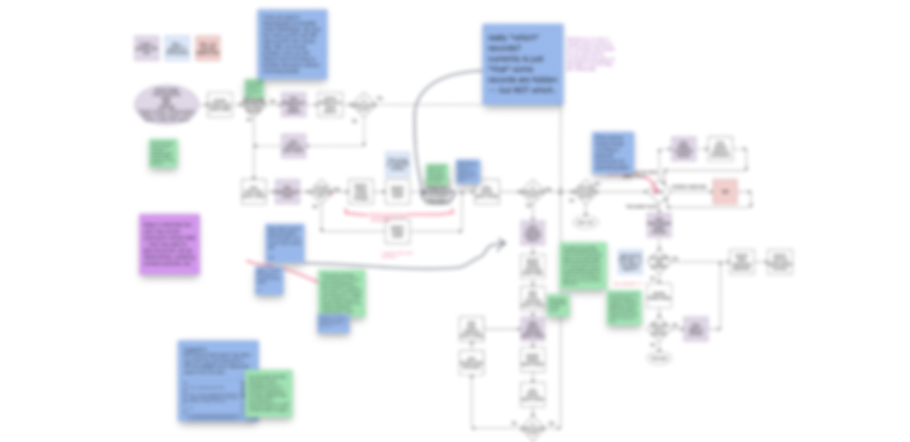
Patient search workflow
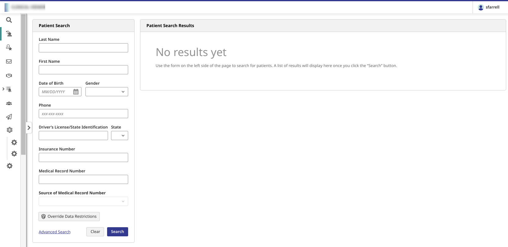
Patient search (desktop)
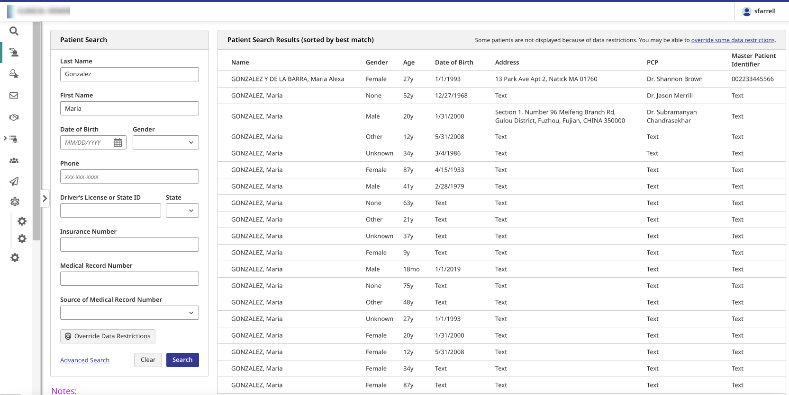
Patient search results (desktop)
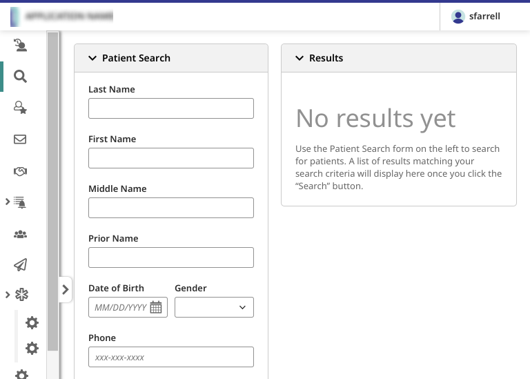
Patient search (tablet)
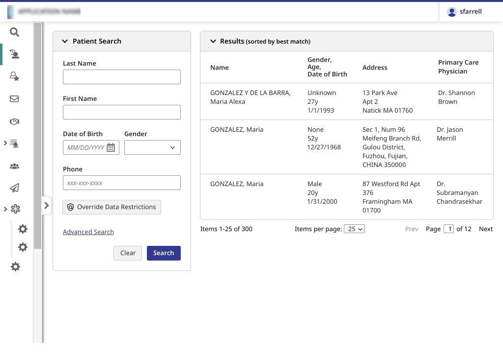
Patient search results (tablet)
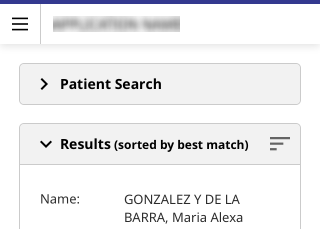
Patient search results (phone)
- I interviewed the product manager and other stakeholders to determine issues with the existing search, as well as reviewed patient search features from customers and competitors.
- I then worked with the development team to analyze and optimize the existing workflow, particularly around data restrictions; I reviewed the resulting flow with in-house clinicians.
- Once the workflow had been approved, I built high-fidelity prototypes of basic search, advanced search, and search results screens that went through extensive clinical and patient safety reviews.
- I also created a design specification for the developers.
Process notes: Patient banner
- The patient banner had to comply with the UK’s National Health Service (NHS) requirements for patient banners. After reviewing these requirements and numerous examples from customers and competitors, I worked with our visual designer to create mockups and prototypes of the patient banner, including edge cases and mobile versions.
- The mockups went through several rounds of hallway, clinical, and patient safety reviews.
- I also provided a design specification for the developers, worked with them on the customization API, performed accessibility testing on the implementation, and supported the developers as they remediated accessibility issues.
Process notes: Login systems
- I gathered requirements from stakeholder teams and worked with the product manager to develop a workflow analysis.
- Once the workflow analysis was complete, I created initial mockups of the screens and then worked with our visual designer to create a high-fidelity prototype.
- I also performed accessibility testing on the implementation and provided the results to the development team.
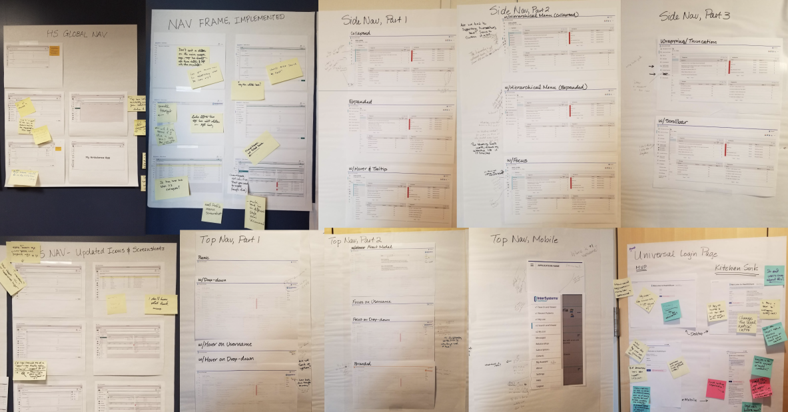
Hallway review photos